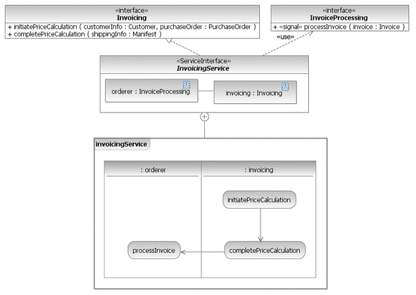

| Example: ServiceInterface (SoaML) |
 |
|
| Related Elements |
|---|
Figure 1 presents an example of a simple Interface that can be used to type a Service or Request. This is a common case where there is no required interface and no protocol. Using an Interface as type for a Service point or Request point is similar to using a WSDL PortType or Java interface as the type of an SCA component's service or reference. Figure 1. A simple UML Interface
Figure 2 shows a more complex ServiceInterface that does involve bi-directional interactions between the parties modeled as provided and required interfaces and a protocol for using the service capabilities. As specified by UML2, Invoicing is the provided interface as derived from the interface realization. InvoiceProcessing is the required interface as derived from the usage dependency. The invoicing and orderer parts of the ServiceInterface represent the consumer and provider of the service. That is, they represent the Service and Request ports at the endpoints of a ServiceChannel when the service provider is connected to a consumer. These parts are used in the protocol to capture the expected interchange between the consumer and provider. The protocol for using the capabilities of a service, and for responding to its needs is captured in an ownedBehavior of the ServiceInterface. The invoicingService Activity models the protocol for the InvoicingService. From the protocol we can see that initiatePriceCalculation must be invoked on the invoicing part followed by completePriceCalculation. Once the price calculation has been completed, the consumer must be prepared to respond to processInvoice. It is clear which part represents the consumer and provider by their types. The providing part is typed by the provided interface while the consuming part is typed by the required interface. Figure 2. A complex ServiceInterface, involving collaboration between provider and consumer  |

| Concepts |
|---|
Several of the above definitions were copied from the Service oriented architecture Modeling Language (SoaML) Specification for the UML Profile and Metamodel Services. View the full copyright notice.
Licensed Materials - Property of IBM |